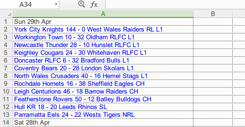
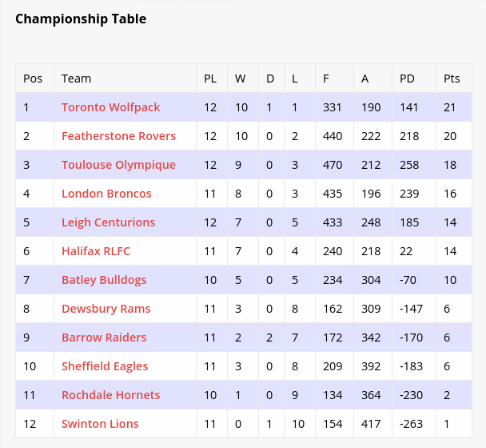
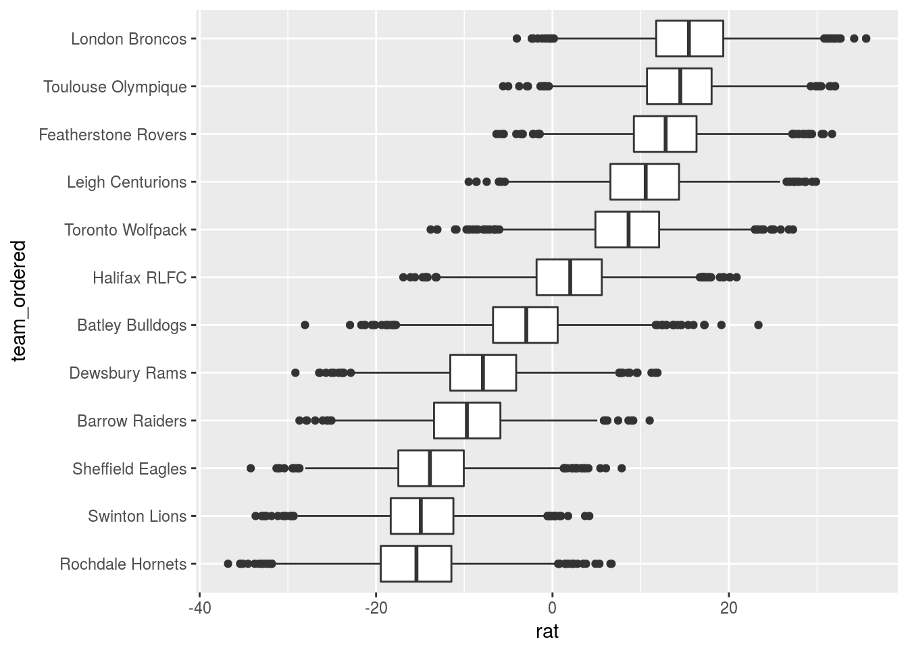

Rating rugby league with Stan
What’s in here
This is a rather long and complicated post. Here are some of the things you’ll find here:
- about rugby league
- extracting data from text
- making dates with
lubridateand usingfillto copy them to empty rows tidyr::extract- making a Bayesian model with Stan
rstan- using
left_jointo look up values in another table fct_reorderand ordering boxplots by median
Introduction
Rugby league is one of the “football” family of sports, in which players gain ground by carrying and passing and kicking the ball (like rugby union, North American football and somewhat like Australian and Gaelic football). The aim of the game is to touch the ball down behind the opponents’ goal line (a “try”, four points) after which a kick is taken at goal (a “conversion”, two points). These typically make up most of the scoring, but teams can also score a penalty goal for two points or a drop goal for one, usually near the end of a close game. See here for more.
Rugby league began in the late 1800s after a dispute about whether players should be paid (as compensation for taking time off work to play). It has thus been a professional game from the start, unlike rugby union which was until relatively recently an amateur game. Rugby league differs from rugby union in two important respects:
- thirteen players a side instead of fifteen
- after a tackle, play stops long enough for the tackled player to get up and for the defence to retreat, and play restarts with the tackled player rolling the ball back to the “dummy half” behind him. This is in principle similar to American football, but the restart of play happens immediately, and so play is effectively continuous.
Most of Rugby League’s clubs are from northern England and the Sydney area of Australia. The sport is also important in the Pacific islands.
Data
I visited this page and copy-pasted this season’s results in the English and Australian top leagues into a spreadsheet, like this:

There is only a single column of text, so I might just as well have pasted it into a text file (or used something like rvest to scrape the page). In any case, it comes to R as a single column of text that will need some processing. We begin by loading some packages:
library(rstan)## Loading required package: ggplot2## Loading required package: StanHeaders## rstan (Version 2.17.2, GitRev: 2e1f913d3ca3)## For execution on a local, multicore CPU with excess RAM we recommend calling
## options(mc.cores = parallel::detectCores()).
## To avoid recompilation of unchanged Stan programs, we recommend calling
## rstan_options(auto_write = TRUE)library(tidyverse)## ── Attaching packages ─────────────────────────────────────────────────────────────────────────── tidyverse 1.2.1 ──## ✔ tibble 1.4.2 ✔ purrr 0.2.4
## ✔ tidyr 0.8.0 ✔ dplyr 0.7.4
## ✔ readr 1.1.1 ✔ stringr 1.3.0
## ✔ tibble 1.4.2 ✔ forcats 0.3.0## ── Conflicts ────────────────────────────────────────────────────────────────────────────── tidyverse_conflicts() ──
## ✖ tidyr::extract() masks rstan::extract()
## ✖ dplyr::filter() masks stats::filter()
## ✖ dplyr::lag() masks stats::lag()library(readxl)
library(lubridate)##
## Attaching package: 'lubridate'## The following object is masked from 'package:base':
##
## dateThese are, respectively, for Bayesian modelling (later), the usual data tidying stuff, reading in Excel files, and handling dates and times (which we will be doing shortly).
Humble beginnings:
I realize I could have avoided the spreadsheet entirely by using “read.table” with “file=‘clipboard’”.
rl=read_excel("/home/ken/Documents/rugby-league.xlsx",col_names = "res",sheet=2)
rl## # A tibble: 353 x 1
## res
## <chr>
## 1 Sun 29th Apr
## 2 York City Knights 144 - 0 West Wales Raiders RL L1
## 3 Workington Town 10 - 32 Oldham RLFC L1
## 4 Newcastle Thunder 28 - 10 Hunslet RLFC L1
## 5 Keighley Cougars 24 - 30 Whitehaven RLFC L1
## 6 Doncaster RLFC 6 - 32 Bradford Bulls L1
## 7 Coventry Bears 20 - 28 London Skolars L1
## 8 North Wales Crusaders 40 - 16 Hemel Stags L1
## 9 Rochdale Hornets 16 - 38 Sheffield Eagles CH
## 10 Leigh Centurions 46 - 18 Barrow Raiders CH
## # ... with 343 more rowsThe layout of things:
- the name of the home team
- a space, then the score of the home team
- a space, a dash, then a space
- the score of the away team, then a space
- the name of the away team, then a space
- a designator for the league in which the match was played:
- SL (top level in England)
- CH (second level in England)
- L1 (third level in England)
- CC (a national knockout tournament)
- NRL (Australian national league)
Many of the team names have spaces in them, and so simply splitting at spaces will entail more processing.
Before that, though, note that we have two kinds of lines here: one containing a date (and no results), which is the date for all the matches between it and the next date. Lines containing dates are easy to identify since they have no space-dash-space in them anywhere. So let’s begin by identifying whether each line is a “result” or not (a date). str_detect from stringr returns TRUE if the second thing is contained anywhere within each item of the first thing, which in this case will yield TRUE if the line refers to a game result and not a date:
rl %>% mutate(isres=str_detect(res," - "))## # A tibble: 353 x 2
## res isres
## <chr> <lgl>
## 1 Sun 29th Apr F
## 2 York City Knights 144 - 0 West Wales Raiders RL L1 T
## 3 Workington Town 10 - 32 Oldham RLFC L1 T
## 4 Newcastle Thunder 28 - 10 Hunslet RLFC L1 T
## 5 Keighley Cougars 24 - 30 Whitehaven RLFC L1 T
## 6 Doncaster RLFC 6 - 32 Bradford Bulls L1 T
## 7 Coventry Bears 20 - 28 London Skolars L1 T
## 8 North Wales Crusaders 40 - 16 Hemel Stags L1 T
## 9 Rochdale Hornets 16 - 38 Sheffield Eagles CH T
## 10 Leigh Centurions 46 - 18 Barrow Raiders CH T
## # ... with 343 more rowsNext we define a column date to be the date (if that’s what the line is, otherwise empty) and a column result to be the result, or empty, ditto. I got rid of the original res at the end of this process so you can see what there is more easily:
rl %>% mutate(isres=str_detect(res," - ")) %>%
mutate(date=ifelse(isres,"",res),
result=ifelse(isres,res,"")) %>%
select(-res)## # A tibble: 353 x 3
## isres date result
## <lgl> <chr> <chr>
## 1 F Sun 29th Apr ""
## 2 T "" York City Knights 144 - 0 West Wales Raiders RL L1
## 3 T "" Workington Town 10 - 32 Oldham RLFC L1
## 4 T "" Newcastle Thunder 28 - 10 Hunslet RLFC L1
## 5 T "" Keighley Cougars 24 - 30 Whitehaven RLFC L1
## 6 T "" Doncaster RLFC 6 - 32 Bradford Bulls L1
## 7 T "" Coventry Bears 20 - 28 London Skolars L1
## 8 T "" North Wales Crusaders 40 - 16 Hemel Stags L1
## 9 T "" Rochdale Hornets 16 - 38 Sheffield Eagles CH
## 10 T "" Leigh Centurions 46 - 18 Barrow Raiders CH
## # ... with 343 more rowsThose dates are text, but I can make them into real dates using lubridate. They are all year 2018, so if I glue the year onto the end, they are in day-month-year order, and then dmy will parse them:
rl %>% mutate(isres=str_detect(res," - ")) %>%
mutate(date=ifelse(isres,"",res),
result=ifelse(isres,res,"")) %>%
select(-res) %>%
mutate(date=dmy(str_c(date," 2018")))## Warning: 295 failed to parse.## # A tibble: 353 x 3
## isres date result
## <lgl> <date> <chr>
## 1 F 2018-04-29 ""
## 2 T NA York City Knights 144 - 0 West Wales Raiders RL L1
## 3 T NA Workington Town 10 - 32 Oldham RLFC L1
## 4 T NA Newcastle Thunder 28 - 10 Hunslet RLFC L1
## 5 T NA Keighley Cougars 24 - 30 Whitehaven RLFC L1
## 6 T NA Doncaster RLFC 6 - 32 Bradford Bulls L1
## 7 T NA Coventry Bears 20 - 28 London Skolars L1
## 8 T NA North Wales Crusaders 40 - 16 Hemel Stags L1
## 9 T NA Rochdale Hornets 16 - 38 Sheffield Eagles CH
## 10 T NA Leigh Centurions 46 - 18 Barrow Raiders CH
## # ... with 343 more rowsThe “dates” that are empty cannot be parsed as dates, so they are turned into missing values. (These are all the lines that “failed to parse”.)
The reason for making the dates into real dates was so that they could be used as the dates for the game results. What we want to do is to replace all those NA values by the previous non-missing value, all the way down. This is a task that comes up often enough that tidyr has a function to do exactly that, called fill. By default it fills down from the previous non-missing value, which is what we want. (It can also be made to fill upwards from the next non-missing value.):
rl %>% mutate(isres=str_detect(res," - ")) %>%
mutate(date=ifelse(isres,"",res),
result=ifelse(isres,res,"")) %>%
select(-res) %>%
mutate(date=dmy(str_c(date," 2018"))) %>%
fill(date)## Warning: 295 failed to parse.## # A tibble: 353 x 3
## isres date result
## <lgl> <date> <chr>
## 1 F 2018-04-29 ""
## 2 T 2018-04-29 York City Knights 144 - 0 West Wales Raiders RL L1
## 3 T 2018-04-29 Workington Town 10 - 32 Oldham RLFC L1
## 4 T 2018-04-29 Newcastle Thunder 28 - 10 Hunslet RLFC L1
## 5 T 2018-04-29 Keighley Cougars 24 - 30 Whitehaven RLFC L1
## 6 T 2018-04-29 Doncaster RLFC 6 - 32 Bradford Bulls L1
## 7 T 2018-04-29 Coventry Bears 20 - 28 London Skolars L1
## 8 T 2018-04-29 North Wales Crusaders 40 - 16 Hemel Stags L1
## 9 T 2018-04-29 Rochdale Hornets 16 - 38 Sheffield Eagles CH
## 10 T 2018-04-29 Leigh Centurions 46 - 18 Barrow Raiders CH
## # ... with 343 more rowsNow, the lines containing just dates have served their purpose (the ones for which isres is FALSE), and once we gotten rid of those lines, we can get rid of the column isres too:
rl %>% mutate(isres=str_detect(res," - ")) %>%
mutate(date=ifelse(isres,"",res),
result=ifelse(isres,res,"")) %>%
select(-res) %>%
mutate(date=dmy(str_c(date," 2018"))) %>%
fill(date) %>%
filter(isres) %>%
select(-isres) ->
rl2## Warning: 295 failed to parse.rl2## # A tibble: 290 x 2
## date result
## <date> <chr>
## 1 2018-04-29 York City Knights 144 - 0 West Wales Raiders RL L1
## 2 2018-04-29 Workington Town 10 - 32 Oldham RLFC L1
## 3 2018-04-29 Newcastle Thunder 28 - 10 Hunslet RLFC L1
## 4 2018-04-29 Keighley Cougars 24 - 30 Whitehaven RLFC L1
## 5 2018-04-29 Doncaster RLFC 6 - 32 Bradford Bulls L1
## 6 2018-04-29 Coventry Bears 20 - 28 London Skolars L1
## 7 2018-04-29 North Wales Crusaders 40 - 16 Hemel Stags L1
## 8 2018-04-29 Rochdale Hornets 16 - 38 Sheffield Eagles CH
## 9 2018-04-29 Leigh Centurions 46 - 18 Barrow Raiders CH
## 10 2018-04-29 Featherstone Rovers 50 - 12 Batley Bulldogs CH
## # ... with 280 more rowsI am using the right-arrow to assign the result to rl2, which I put, unindented, on the next line, to remind myself that I am creating this new data frame.
Now we have to deal with that result column.
I learned Perl, which is a great language for handling text like this. The idea there is that you use a “regular expression” with “capture groups” to identify and extract the things you want. A similar tidyverse functionality lives in extract from tidyr. I’m doing to do this in three steps. The first step is to separate result into the bit before the space-dash-space. In fact, I can use separate for this bit:
I realized in time that “sep” below does not have to be a single character.
rl2 %>%
separate(result,into=c("first","second"),sep=" - ")## # A tibble: 290 x 3
## date first second
## <date> <chr> <chr>
## 1 2018-04-29 York City Knights 144 0 West Wales Raiders RL L1
## 2 2018-04-29 Workington Town 10 32 Oldham RLFC L1
## 3 2018-04-29 Newcastle Thunder 28 10 Hunslet RLFC L1
## 4 2018-04-29 Keighley Cougars 24 30 Whitehaven RLFC L1
## 5 2018-04-29 Doncaster RLFC 6 32 Bradford Bulls L1
## 6 2018-04-29 Coventry Bears 20 28 London Skolars L1
## 7 2018-04-29 North Wales Crusaders 40 16 Hemel Stags L1
## 8 2018-04-29 Rochdale Hornets 16 38 Sheffield Eagles CH
## 9 2018-04-29 Leigh Centurions 46 18 Barrow Raiders CH
## 10 2018-04-29 Featherstone Rovers 50 12 Batley Bulldogs CH
## # ... with 280 more rowsNow we can’t use separate any more, because sometimes space separates the thing we want, and sometimes it separates words in a team name. This is where extract comes in, as we tackle part 2.
first contains some text (the home team’s name), then a space, then one or more digits, then the end of the string. The following extracts those pieces (I explain my regular expression below):
Both “tidyr” and “rstan” have a function called “extract”. By coincidence we will be using both of them in this post, so I thought it better to be clear about which one I was using.
rl2 %>%
separate(result,into=c("first","second"),sep=" - ") %>%
tidyr::extract(first,c("t1","s1"),"(.*)\\s(\\d+)$") ## # A tibble: 290 x 4
## date t1 s1 second
## <date> <chr> <chr> <chr>
## 1 2018-04-29 York City Knights 144 0 West Wales Raiders RL L1
## 2 2018-04-29 Workington Town 10 32 Oldham RLFC L1
## 3 2018-04-29 Newcastle Thunder 28 10 Hunslet RLFC L1
## 4 2018-04-29 Keighley Cougars 24 30 Whitehaven RLFC L1
## 5 2018-04-29 Doncaster RLFC 6 32 Bradford Bulls L1
## 6 2018-04-29 Coventry Bears 20 28 London Skolars L1
## 7 2018-04-29 North Wales Crusaders 40 16 Hemel Stags L1
## 8 2018-04-29 Rochdale Hornets 16 38 Sheffield Eagles CH
## 9 2018-04-29 Leigh Centurions 46 18 Barrow Raiders CH
## 10 2018-04-29 Featherstone Rovers 50 12 Batley Bulldogs CH
## # ... with 280 more rowsA lot more about string matching and regular expressions is in Chapter 14 of R for Data Science. Link at the end in References, since I am not sure about putting a link in a marginal note.
The inputs to extract are: some text that we want to pull something out of, new columns to store the results in, and a regular expression that provides a recipe for what to pull out. My regular expression contains:
.matches any single character*matches zero of more of the preceding, so.*means to match zero or more of any characters()around part of a regular expression makes a “capture group”:(.*)gets saved int1(the home team’s name)\\smatches exactly one whitespace character (space or tab)\\dmatches exactly one numeric digit 0 through 9+matches one or more of the preceding, so\\d+matches one or more digits(\\d+)matches one or more digits and captures the result, so thats1contains the home team’s score$matches the end of the text, so that the digits have to be right at the end. (This would help if a team was called something like “Bassenthwaite Wanderers RLFC (1897)”, with numbers in it.)
If you were wondering how .* knew to match everything except the numbers at the end: well, regular expressions are by default “greedy” in that they match as much as possible such that the whole regular expression will still match something. In this case, .* can match everything up to (but not including) the space before the score, and “space then some digits then the end” will match the score, so it still works.
Part three is to do the same thing to second. This is a teeny bit more complicated, but the same idea: the beginning of the string, some digits (the away team’s score), a space, some text (the away team’s name), a space, some more text that does not contain spaces (league designator), end of the string. So the regular expression shown below will catch it:
rl2 %>%
separate(result,into=c("first","second"),sep=" - ") %>%
tidyr::extract(first,c("t1","s1"),"(.*)\\s(\\d+)$") %>%
tidyr::extract(second,c("s2","t2","lg"),"^(\\d+)\\s(.*)\\s([^ ]+)$") %>%
mutate(diff=as.numeric(s1)-as.numeric(s2)) ->
games
games## # A tibble: 290 x 7
## date t1 s1 s2 t2 lg diff
## <date> <chr> <chr> <chr> <chr> <chr> <dbl>
## 1 2018-04-29 York City Knights 144 0 West Wales … L1 144
## 2 2018-04-29 Workington Town 10 32 Oldham RLFC L1 - 22.0
## 3 2018-04-29 Newcastle Thunder 28 10 Hunslet RLFC L1 18.0
## 4 2018-04-29 Keighley Cougars 24 30 Whitehaven … L1 - 6.00
## 5 2018-04-29 Doncaster RLFC 6 32 Bradford Bu… L1 - 26.0
## 6 2018-04-29 Coventry Bears 20 28 London Skol… L1 - 8.00
## 7 2018-04-29 North Wales Crusaders 40 16 Hemel Stags L1 24.0
## 8 2018-04-29 Rochdale Hornets 16 38 Sheffield E… CH - 22.0
## 9 2018-04-29 Leigh Centurions 46 18 Barrow Raid… CH 28.0
## 10 2018-04-29 Featherstone Rovers 50 12 Batley Bull… CH 38.0
## # ... with 280 more rowsThe [^ ] is called a “character class”. This one means “anything that does not match space”, so the third capture group, the one saved into lg, is “one or more non-spaces”. Finally, I create a column called diff that is the difference between the home and away team’s scores, bearing in mind that s1 and s2 are both text. (A positive diff means that the home team won.)
I save this into a data frame called games. This is what we will use for modelling later.
A Bayesian model for rugby league
It might be possible to model the actual point-scoring process: maybe a Poisson model for tries (with mean depending on the team strength), conversions successfully kicked with a certain probability (that might vary by team; see also here). But then there are penalty goals and drop goals, which are typically kicked near the end of a game, if they are close enough to goal to stand a reasonable chance of success, and if the extra two points or one point are enough to substantially improve a team’s chance of winning the game. (A team leading by six points might kick a drop goal to lead by seven and force the other side to score twice instead of being able to level the score with a converted try.)
In rugby league, the conversion is kicked from level with where the ball was touched down. Thus, if the try was scored between the posts, the conversion is from right in front of the posts, but if the try was scored near the sideline, the conversion has to be kicked from the sideline. The kicker can move back as far as he likes, and tries to make an easier angle without making the kick too long. Thus conversions are not all of equal difficulty.
So I gave up on that idea and went with something a lot simpler. I decided to model the score difference as having a normal distribution with mean that depended on the relative strengths of the teams (the difference between their “ratings”), and a standard deviation that was fixed for all games (to be estimated). I could have also used something like a \(t\) distribution with degrees of freedom to be estimated, which might better account for freak results, but this seemed to be a good place to start.
As in my other blog post about Stan, I write out the (likelihood part of the) model first, and then piece together the rest of the Stan code. I assert that each team has a rating rat, and I let sigma_diff be the (unknown) SD of score differences. I can compute the rating differences game by game. I seem to get the best results in Stan if I calculate things step by step, so my likelihood part looks like this:
model {
// likelihood
for (i in 1:ng) {
o1=t1[i];
o2=t2[i];
ratdiff[i]=rat[o1]-rat[o2];
}
diff ~ normal(ratdiff, sigma_diff);
}I realized coding this that the teams would have to have numbers rather than names, because Stan arrays have integer subscripts. Thus t1[i] is the home team in game i (an integer), and rat[o1] is the rating of team number o1. The sampling step at the bottom works just fine on vectors, so that can be outside the loop.
This is a general way of modelling with categorical variables in Stan: turn the categories into numbers and have an effect for each (numbered) category.
ng is the number of games. Elsewhere I need nt to be the number of teams.
Now I have to tidy up after myself. t1 and t2 are data, and diff will be data also. o1, o2 and ratdiff are calculated here, so they will have to be declared. rat and sigma_diff are parameters, so they will need to be given prior distributions and declared in a parameters section. A normal prior for rat seems reasonable, with an SD that will be part of the data; also it seems easiest to have a chi-squared prior for sigma_diff with a df (mean) that will also be part of the data.
All of which leads me to this (model as a piece of text):
model='
data {
int<lower=2> nt;
int<lower=2> ng;
real<lower=0> sigma_prior;
real<lower=0> sigma_diff_mean;
int<lower=1> t1[ng];
int<lower=1> t2[ng];
real diff[ng];
}
parameters {
real<lower=0> sigma_diff;
real rat[nt];
}
model {
int o1;
int o2;
real ratdiff[ng];
// prior
rat ~ normal(0, sigma_prior);
sigma_diff ~ chi_square(sigma_diff_mean);
// likelihood
for (i in 1:ng) {
o1=t1[i];
o2=t2[i];
ratdiff[i]=rat[o1]-rat[o2];
}
diff ~ normal(ratdiff, sigma_diff);
}
'For model-checking I would add a generated quantities section to simulate predictive distributions (which I would then compare with the data). But that’s for later.
Compile that (to C++), ignoring the warnings:
model_compiled=stan_model(model_code=model)## In file included from /home/ken/R/x86_64-pc-linux-gnu-library/3.4/BH/include/boost/config.hpp:39:0,
## from /home/ken/R/x86_64-pc-linux-gnu-library/3.4/BH/include/boost/math/tools/config.hpp:13,
## from /home/ken/R/x86_64-pc-linux-gnu-library/3.4/StanHeaders/include/stan/math/rev/core/var.hpp:7,
## from /home/ken/R/x86_64-pc-linux-gnu-library/3.4/StanHeaders/include/stan/math/rev/core/gevv_vvv_vari.hpp:5,
## from /home/ken/R/x86_64-pc-linux-gnu-library/3.4/StanHeaders/include/stan/math/rev/core.hpp:12,
## from /home/ken/R/x86_64-pc-linux-gnu-library/3.4/StanHeaders/include/stan/math/rev/mat.hpp:4,
## from /home/ken/R/x86_64-pc-linux-gnu-library/3.4/StanHeaders/include/stan/math.hpp:4,
## from /home/ken/R/x86_64-pc-linux-gnu-library/3.4/StanHeaders/include/src/stan/model/model_header.hpp:4,
## from file63b37263e1c1.cpp:8:
## /home/ken/R/x86_64-pc-linux-gnu-library/3.4/BH/include/boost/config/compiler/gcc.hpp:186:0: warning: "BOOST_NO_CXX11_RVALUE_REFERENCES" redefined
## # define BOOST_NO_CXX11_RVALUE_REFERENCES
## ^
## <command-line>:0:0: note: this is the location of the previous definitionOrganizing the data for Stan
My team is the Toronto Wolfpack, who are playing in the Championship (2nd level) this year. Yes, this is a team based in Canada, playing in the English league system.
So let’s rate the teams in this league (designated CH in my data):
games %>% filter(lg=="CH") ->
games_ch
games_ch## # A tibble: 67 x 7
## date t1 s1 s2 t2 lg diff
## <date> <chr> <chr> <chr> <chr> <chr> <dbl>
## 1 2018-04-29 Rochdale Hornets 16 38 Sheffield Eagl… CH -22.0
## 2 2018-04-29 Leigh Centurions 46 18 Barrow Raiders CH 28.0
## 3 2018-04-29 Featherstone Rovers 50 12 Batley Bulldogs CH 38.0
## 4 2018-04-28 Swinton Lions 8 62 Toulouse Olymp… CH -54.0
## 5 2018-04-28 Toronto Wolfpack 42 10 Halifax RLFC CH 32.0
## 6 2018-04-28 London Broncos 64 6 Dewsbury Rams CH 58.0
## 7 2018-04-25 Dewsbury Rams 18 46 Halifax RLFC CH -28.0
## 8 2018-04-15 Sheffield Eagles 20 72 Leigh Centurio… CH -52.0
## 9 2018-04-15 Halifax RLFC 18 12 Swinton Lions CH 6.00
## 10 2018-04-15 Dewsbury Rams 12 23 Toronto Wolfpa… CH -11.0
## # ... with 57 more rowsI said above that we need to convert the teams to number labels. So let’s make a conversion table. First I need to get all the teams into one vector:
teams_vec=with(games_ch,c(t1,t2))and then I grab the distinct ones, put them into a data frame, and supply some ID numbers (the row numbers of the data frame will do):
tibble(team=teams_vec) %>% distinct() %>%
mutate(team_id=row_number()) ->
teams
teams## # A tibble: 12 x 2
## team team_id
## <chr> <int>
## 1 Rochdale Hornets 1
## 2 Leigh Centurions 2
## 3 Featherstone Rovers 3
## 4 Swinton Lions 4
## 5 Toronto Wolfpack 5
## 6 London Broncos 6
## 7 Dewsbury Rams 7
## 8 Sheffield Eagles 8
## 9 Halifax RLFC 9
## 10 Barrow Raiders 10
## 11 Batley Bulldogs 11
## 12 Toulouse Olympique 12Those with a keen eye on the geography will recognise a number of locations in northern England, and a few outliers: London, Toulouse, Toronto.
We’ll use this as a conversion table to convert the team names to numbers, run Stan, and then use this table to convert the results back afterwards. The major ingredient to do that is left_join. This looks up a column of one data frame in another data frame. Let’s do that with the home teams, which are t1 in games_ch. The by is needed below since the column names are not the same: what is t1 in games_ch needs to be looked up in team in teams:
games_ch %>% left_join(teams,by=c("t1"="team"))## # A tibble: 67 x 8
## date t1 s1 s2 t2 lg diff team_id
## <date> <chr> <chr> <chr> <chr> <chr> <dbl> <int>
## 1 2018-04-29 Rochdale Hornets 16 38 Sheffi… CH -22.0 1
## 2 2018-04-29 Leigh Centurions 46 18 Barrow… CH 28.0 2
## 3 2018-04-29 Featherstone Rovers 50 12 Batley… CH 38.0 3
## 4 2018-04-28 Swinton Lions 8 62 Toulou… CH -54.0 4
## 5 2018-04-28 Toronto Wolfpack 42 10 Halifa… CH 32.0 5
## 6 2018-04-28 London Broncos 64 6 Dewsbu… CH 58.0 6
## 7 2018-04-25 Dewsbury Rams 18 46 Halifa… CH -28.0 7
## 8 2018-04-15 Sheffield Eagles 20 72 Leigh … CH -52.0 8
## 9 2018-04-15 Halifax RLFC 18 12 Swinto… CH 6.00 9
## 10 2018-04-15 Dewsbury Rams 12 23 Toront… CH -11.0 7
## # ... with 57 more rowsWe’ve gained an extra column team_id, which is the numerical ID of the home team. So we repeat the process with the away teams:
games_ch %>%
left_join(teams,by=c("t1"="team")) %>%
left_join(teams,by=c("t2"="team")) ->
d
d## # A tibble: 67 x 9
## date t1 s1 s2 t2 lg diff team_id.x team_id.y
## <date> <chr> <chr> <chr> <chr> <chr> <dbl> <int> <int>
## 1 2018-04-29 Rochdal… 16 38 Sheff… CH -22.0 1 8
## 2 2018-04-29 Leigh C… 46 18 Barro… CH 28.0 2 10
## 3 2018-04-29 Feather… 50 12 Batle… CH 38.0 3 11
## 4 2018-04-28 Swinton… 8 62 Toulo… CH -54.0 4 12
## 5 2018-04-28 Toronto… 42 10 Halif… CH 32.0 5 9
## 6 2018-04-28 London … 64 6 Dewsb… CH 58.0 6 7
## 7 2018-04-25 Dewsbur… 18 46 Halif… CH -28.0 7 9
## 8 2018-04-15 Sheffie… 20 72 Leigh… CH -52.0 8 2
## 9 2018-04-15 Halifax… 18 12 Swint… CH 6.00 9 4
## 10 2018-04-15 Dewsbur… 12 23 Toron… CH -11.0 7 5
## # ... with 57 more rowsThis time, we have a team_id.x and a team_id.y which are the numerical IDs of the home and away teams respectively. This contains all we need for input to Stan.
Running Stan
Looking back at the datasection of our Stan code tells us what we need to supply. There are two prior SDs. One is sigma_prior, the prior SD of the team ratings. I’ll pick 10 for this, suggesting that the top and bottom teams are about 40–60 points apart (2–3 times sigma up and down). The other is sigma_diff_mean. This is the mean of the prior distribution of SD of score difference within a game. I’ll use 20 (points) for this. The numbers of teams and games are the numbers of rows of data frames we already made. So now make a list:
ch_stan_data=list(
nt=nrow(teams),
ng=nrow(games_ch),
sigma_prior=10,
sigma_diff_mean=20,
t1=d$team_id.x,
t2=d$team_id.y,
diff=d$diff
)and then sample away (which doesn’t take long):
set.seed(457299)
r1=sampling(model_compiled,data=ch_stan_data)##
## SAMPLING FOR MODEL '1c822356d9d5242a98f27a218c5175d5' NOW (CHAIN 1).
##
## Gradient evaluation took 1.1e-05 seconds
## 1000 transitions using 10 leapfrog steps per transition would take 0.11 seconds.
## Adjust your expectations accordingly!
##
##
## Iteration: 1 / 2000 [ 0%] (Warmup)
## Iteration: 200 / 2000 [ 10%] (Warmup)
## Iteration: 400 / 2000 [ 20%] (Warmup)
## Iteration: 600 / 2000 [ 30%] (Warmup)
## Iteration: 800 / 2000 [ 40%] (Warmup)
## Iteration: 1000 / 2000 [ 50%] (Warmup)
## Iteration: 1001 / 2000 [ 50%] (Sampling)
## Iteration: 1200 / 2000 [ 60%] (Sampling)
## Iteration: 1400 / 2000 [ 70%] (Sampling)
## Iteration: 1600 / 2000 [ 80%] (Sampling)
## Iteration: 1800 / 2000 [ 90%] (Sampling)
## Iteration: 2000 / 2000 [100%] (Sampling)
##
## Elapsed Time: 0.145042 seconds (Warm-up)
## 0.039637 seconds (Sampling)
## 0.184679 seconds (Total)
##
##
## SAMPLING FOR MODEL '1c822356d9d5242a98f27a218c5175d5' NOW (CHAIN 2).
##
## Gradient evaluation took 8e-06 seconds
## 1000 transitions using 10 leapfrog steps per transition would take 0.08 seconds.
## Adjust your expectations accordingly!
##
##
## Iteration: 1 / 2000 [ 0%] (Warmup)
## Iteration: 200 / 2000 [ 10%] (Warmup)
## Iteration: 400 / 2000 [ 20%] (Warmup)
## Iteration: 600 / 2000 [ 30%] (Warmup)
## Iteration: 800 / 2000 [ 40%] (Warmup)
## Iteration: 1000 / 2000 [ 50%] (Warmup)
## Iteration: 1001 / 2000 [ 50%] (Sampling)
## Iteration: 1200 / 2000 [ 60%] (Sampling)
## Iteration: 1400 / 2000 [ 70%] (Sampling)
## Iteration: 1600 / 2000 [ 80%] (Sampling)
## Iteration: 1800 / 2000 [ 90%] (Sampling)
## Iteration: 2000 / 2000 [100%] (Sampling)
##
## Elapsed Time: 0.182948 seconds (Warm-up)
## 0.036608 seconds (Sampling)
## 0.219556 seconds (Total)
##
##
## SAMPLING FOR MODEL '1c822356d9d5242a98f27a218c5175d5' NOW (CHAIN 3).
##
## Gradient evaluation took 6e-06 seconds
## 1000 transitions using 10 leapfrog steps per transition would take 0.06 seconds.
## Adjust your expectations accordingly!
##
##
## Iteration: 1 / 2000 [ 0%] (Warmup)
## Iteration: 200 / 2000 [ 10%] (Warmup)
## Iteration: 400 / 2000 [ 20%] (Warmup)
## Iteration: 600 / 2000 [ 30%] (Warmup)
## Iteration: 800 / 2000 [ 40%] (Warmup)
## Iteration: 1000 / 2000 [ 50%] (Warmup)
## Iteration: 1001 / 2000 [ 50%] (Sampling)
## Iteration: 1200 / 2000 [ 60%] (Sampling)
## Iteration: 1400 / 2000 [ 70%] (Sampling)
## Iteration: 1600 / 2000 [ 80%] (Sampling)
## Iteration: 1800 / 2000 [ 90%] (Sampling)
## Iteration: 2000 / 2000 [100%] (Sampling)
##
## Elapsed Time: 0.151536 seconds (Warm-up)
## 0.042736 seconds (Sampling)
## 0.194272 seconds (Total)
##
##
## SAMPLING FOR MODEL '1c822356d9d5242a98f27a218c5175d5' NOW (CHAIN 4).
##
## Gradient evaluation took 8e-06 seconds
## 1000 transitions using 10 leapfrog steps per transition would take 0.08 seconds.
## Adjust your expectations accordingly!
##
##
## Iteration: 1 / 2000 [ 0%] (Warmup)
## Iteration: 200 / 2000 [ 10%] (Warmup)
## Iteration: 400 / 2000 [ 20%] (Warmup)
## Iteration: 600 / 2000 [ 30%] (Warmup)
## Iteration: 800 / 2000 [ 40%] (Warmup)
## Iteration: 1000 / 2000 [ 50%] (Warmup)
## Iteration: 1001 / 2000 [ 50%] (Sampling)
## Iteration: 1200 / 2000 [ 60%] (Sampling)
## Iteration: 1400 / 2000 [ 70%] (Sampling)
## Iteration: 1600 / 2000 [ 80%] (Sampling)
## Iteration: 1800 / 2000 [ 90%] (Sampling)
## Iteration: 2000 / 2000 [100%] (Sampling)
##
## Elapsed Time: 0.159379 seconds (Warm-up)
## 0.059324 seconds (Sampling)
## 0.218703 seconds (Total)r1## Inference for Stan model: 1c822356d9d5242a98f27a218c5175d5.
## 4 chains, each with iter=2000; warmup=1000; thin=1;
## post-warmup draws per chain=1000, total post-warmup draws=4000.
##
## mean se_mean sd 2.5% 25% 50% 75% 97.5%
## sigma_diff 19.26 0.03 1.83 16.03 17.97 19.11 20.42 23.11
## rat[1] -15.41 0.09 5.87 -26.46 -19.47 -15.42 -11.46 -3.67
## rat[2] 10.46 0.09 5.64 -0.41 6.57 10.57 14.35 21.25
## rat[3] 12.76 0.08 5.31 2.09 9.22 12.83 16.33 23.03
## rat[4] -14.84 0.09 5.47 -25.78 -18.34 -14.93 -11.23 -3.74
## rat[5] 8.50 0.09 5.45 -2.44 4.87 8.63 12.09 18.79
## rat[6] 15.51 0.09 5.64 4.54 11.76 15.47 19.36 26.52
## rat[7] -7.81 0.09 5.45 -18.23 -11.59 -7.88 -4.12 2.94
## rat[8] -13.74 0.09 5.50 -24.18 -17.48 -13.89 -10.06 -2.48
## rat[9] 1.98 0.09 5.59 -9.19 -1.81 2.01 5.59 13.19
## rat[10] -9.65 0.09 5.51 -20.58 -13.43 -9.71 -5.91 1.48
## rat[11] -3.04 0.09 5.60 -14.32 -6.74 -2.97 0.59 7.97
## rat[12] 14.43 0.09 5.42 3.73 10.71 14.49 18.04 24.90
## lp__ -221.18 0.07 2.72 -227.46 -222.74 -220.84 -219.21 -216.86
## n_eff Rhat
## sigma_diff 4000 1
## rat[1] 4000 1
## rat[2] 4000 1
## rat[3] 4000 1
## rat[4] 4000 1
## rat[5] 4000 1
## rat[6] 4000 1
## rat[7] 4000 1
## rat[8] 4000 1
## rat[9] 4000 1
## rat[10] 4000 1
## rat[11] 4000 1
## rat[12] 4000 1
## lp__ 1461 1
##
## Samples were drawn using NUTS(diag_e) at Thu May 3 12:19:37 2018.
## For each parameter, n_eff is a crude measure of effective sample size,
## and Rhat is the potential scale reduction factor on split chains (at
## convergence, Rhat=1).This seems to have worked, as evidenced by the Rhat values of 1 and the n_eff values of 4000 (there were \(4\times 1000\) non-warm-up samples). The rat[1], rat[2] etc refer to the team ID numbers, but it would be nice to have a table of posterior rating means for each team with the team names in it. First, though, we have to extract the posterior distributions from r1, using the extract from rstan (and not the extract from tidyr!):
r2=rstan::extract(r1)
posterior_means=apply(r2$rat,2,mean)
posterior_means## [1] -15.412479 10.464621 12.762741 -14.838499 8.496976 15.509100
## [7] -7.809105 -13.743902 1.980887 -9.645538 -3.039513 14.434609r2$rat is a \(4000\times 12\) matrix (one row per Stan sample, 1 column per team). Since I only want the posterior means from it for the moment, I fired up some base R to get the column means directly. These are in the order of the team numbers, so now we make a data frame with the team numbers in it, and look them up in teams:
tibble(post_mean=posterior_means) %>%
mutate(team_id=row_number()) %>%
left_join(teams) %>%
arrange(desc(post_mean))## Joining, by = "team_id"## # A tibble: 12 x 3
## post_mean team_id team
## <dbl> <int> <chr>
## 1 15.5 6 London Broncos
## 2 14.4 12 Toulouse Olympique
## 3 12.8 3 Featherstone Rovers
## 4 10.5 2 Leigh Centurions
## 5 8.50 5 Toronto Wolfpack
## 6 1.98 9 Halifax RLFC
## 7 - 3.04 11 Batley Bulldogs
## 8 - 7.81 7 Dewsbury Rams
## 9 - 9.65 10 Barrow Raiders
## 10 -13.7 8 Sheffield Eagles
## 11 -14.8 4 Swinton Lions
## 12 -15.4 1 Rochdale HornetsThis time the join is simpler because the column we want to look up has the same name team_id in both data frames, and our final result has acquired a column team that matches up with team_id.
The ordering of teams here is not the same as in the league table (as of this writing):

The most visible difference is that the Toronto Wolfpack are rated 5th but top of the table. My guess is that my ratings place a greater emphasis on points scored and a lesser emphasis on wins (since wins do not appear explicitly in my ratings). The Wolfpack have conceded the fewest points in the league, but have scored a lot fewer points than the teams around them. This would show up as the Wolfpack doing better than expected (by the ratings) against the teams at the top and worse against the teams at the bottom.
A nice visual is to display the rating posterior distributions as boxplots, one for each team, in order of median:
r2$rat %>% as_tibble() %>%
gather(team_number,rat,everything()) %>%
mutate(team_id=parse_number(team_number)) %>%
left_join(teams) %>%
mutate(team_ordered=fct_reorder(team,rat,median)) %>%
ggplot(aes(x=team_ordered,y=rat))+geom_boxplot()+
coord_flip() ->
g## Joining, by = "team_id"There is a lot to explain here, so let me take a shot:
- grab the matrix of posterior distributions and turn it into a data frame. (This acquires column names
V1,V2etc.) - recognise that
ggplotlikes to have thexandyfor a plot in one column each, so create “long format”: a column containing all the posterior-distribution rating values, and a second column saying which team those rating values belong to. - pull just the numbers out of
V1,V2etc. - look those team numbers up (adding a column
teamwith the team names) - out of those (text) team names, create an ordered factor, where the levels are ordered by the median of the variable
rat(this also does the calculation) - make side-by-side (vertical) boxplots of rating using the ordered team names as groups
- turn the boxplots around so they’re horizontal (leaving space for the team names on the left).
Here’s the graph:
g
The top five teams and the bottom three teams seem to be distinct from the teams in the middle.
References
Wikipedia article on rugby league
Wikipedia article on rugby league game play
Tidyverse help page on “extract”
Tidyverse help page on “fct_reorder”
R for Data Science: chapter 14 for strings and regular expressions, chapter 15 for factors (where I got fct_reorder from)